직업상담사-2급 (2015-05-31 기출문제)
1과목: 직업상담학
1. 직업상담 초기 접수면접에서 이루어지는 주된 내용은?
- 행동수정
- 과제물 부여
- 내담자 심리평가
- 내담자와 상담자 간의 상담관계 형성
(정답률: 87%)

2. 직업상담자가 지켜야 할 윤리적 행동과 가장 거리가 먼 것은?
- 내담자에 관한 정보를 교육과 연구를 위해 임의로 적극 활용한다.
- 내담자를 좀 더 효율적으로 도울 수 있는 방법을 꾸준히 연구 개발한다.
- 내담자와 협의 하에 상담관계의 형식, 방법, 목적을 설정하고 토의한다.
- 자신이 종사하는 전문직의 바람직한 발전을 위하여 최선을 다한다.
(정답률: 85%)
3. 상담 초기과정의 활동과 가장 거리가 먼 것은?
- 상담의 목표를 설정한다.
- 내담자와 라포를 형성한다.
- 내담자의 심리상태를 평가한다.
- 내담자의 문제행동에 대한 대안을 찾아본다.
(정답률: 78%)
4. 내담자의 세계를 상담자 자신의 세계인 것처럼 경험하지만 객관적인 위치에서 벗어나지 않는 상담대화의 기법은?
- 수용
- 전이
- 공감
- 동정
(정답률: 74%)
5. 필립스(Phillips)가 제시한 상담목표에 따른 진로문제의 분류 범주를 따른다면, 내담자가 자기의 능력이 어느 정도인지, 어떤 분야의 직업을 원하는지, 왜 일하는 것이 싫은지 등의 고민을 가지고 있는 경우 상담의 초점은 어디에 두어야 하는가?
- 자기탐색과 발견
- 선택의 준비도
- 의사결정 과정
- 선택과 결정
(정답률: 84%)
6. 인간을 과거나 환경에 의해 결정되는 존재가 아니라 현재의 사고, 감정, 행동의 전체성과 통합을 추구하는 존재로 보는 상담접근법은?
- 정신분석학적 상담
- 형태주의 상담
- 개인주의 상담
- 교류분석적 상담
(정답률: 71%)
7. 직업상담의 과정에 진단, 문제분류, 문제구체화, 문제해결의 단계 등이 포함되어야 하며, 이러한 목적을 달성하기 위해 면담기법, 검사해석, 직업정보 등이 직업상담 과정에 포함되어야 한다는 견해를 가진 학자는?
- 윌리암슨(Williamson)
- 보딘(Bordin)
- 크리츠(Crites)
- 긴즈버그(Ginzberg)
(정답률: 68%)
8. 강박증이나 공포증을 가지고 있는 사람들의 예기불안(Anticipatory, Anxiety)을 다루기 위하여 자기가 두려워하는 그 일을 일부러 하도록 격려하는 상담 기법은?
- 행동시연
- 자극변별
- 적극적 심상화
- 역설적 의도
(정답률: 63%)
9. 직업카드 분류시 고려해야 할 사항과 가장 거리가 먼 것은?
- 선택한 직업카드의 숫자
- 포함될 직업의 혼합에 관한 문제
- 경력수준
- 한국직업사전 분류체계
(정답률: 66%)
10. 행동주의적 상담(행동치료)에서 고전적 조건형성의 원리를 반영한 것으로, 특정 대상에 대한 공포증상을 치료하는 데 효과적인 기법은?
- 토큰기법
- 체계적 둔감법
- 조형기법
- 타임아웃기법
(정답률: 81%)
11. 직업상담에서 직업카드분류법은 무엇을 알아보기 위한 것인가?
- 직업선택 시 사용가능한 기술
- 가족 내 서열 및 직업가계도
- 직업세계와 고용시장의 변화
- 직업선택의 동기와 가치
(정답률: 77%)
12. 청소년 직업발달에 영향을 미치는 요인과 가장 거리가 먼 것은?
- 부모의 직업
- 성역할의 사회화
- 진로교사의 직업선택
- 실습기간 동안의 근로경험
(정답률: 76%)
13. 다음 중 인간중심 상담이론의 기본가정에 포함되는 것을 모두 고른 것은?
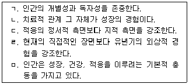
- ㄷ, ㅁ
- ㄱ, ㄴ, ㅁ
- ㄴ, ㄹ, ㅁ
- ㄱ, ㄴ, ㄷ, ㄹ
(정답률: 70%)
14. 정신역동적 직업상담에서 보딘(Bordin)이 제시한 진단범주에 포함되지 않는 것은?
- 독립성
- 자아갈등
- 정보의 부족
- 진로선택에 따르는 불안
(정답률: 73%)
15. 직업상담 영역과 가장 거리가 먼 것은?
- 직업일반상담
- 직업정신건강상담
- 취업상담
- 실존문제상담
(정답률: 77%)
16. 특성-요인이론에서 파슨서(Parsons)가 구체화한 3요소 직업지도모델에 포함되지 않는 것은?
- 내담자 특성의 객관적인 분석
- 직업세계의 분석
- 과학적 조언을 통한 매칭(Matching)
- 주변 환경의 분석
(정답률: 58%)
17. 다음은 인지적 명확성이 부족한 내담자와의 상담내용이다. 상담사가 주로 다루고 있는 내담자 특성으로 가장 적합한 것은?
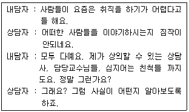
- 파행적 의사소통
- 구체성의 결여
- 가정된 불가능
- 강박적 사고
(정답률: 76%)
18. 직업상담사의 역할과 가장 거리가 먼 것은?
- 조언자의 역할
- 자료제공자의 역할
- 내담자의 보호자 역할
- 기관/단체들과의 협의자 역할
(정답률: 78%)
19. 생애진로사정(Life Career Assessment)에 관한 설명으로 틀린 것은?
- 생애진로사정은 Jung의 분석심리학에 일부 이론적 기초를 두고 있다.
- 생애진로사정의 구조는 진로사정, 전형적인 하루, 강점과 장애 및 요약으로 이루어진다.
- 생애진로사정은 검사실시나 검사해석의 예비적 단계에서 특별히 유용한다.
- 생애진로사정은 구조화된 면담기술로서 짧은 시간에 체계적인 정보를 수집할 수 있다.
(정답률: 70%)
20. 직업상담자가 갖추어야 하는 지식이나 능력과 가장 거리가 먼 것은?
- 직업문제를 갖고 있는 내담자에 대한 심리치료 능력
- 직업상담의 연구 및 평가능력
- 국가정책, 인구구조 변화, 미래사회 특징에 관한 지식
- 동료를 이끄는 리더십을 발휘할 수 있는 기술
(정답률: 67%)
2과목: 직업심리학
21. 이론적 강조점이 다른 직업심리 이론가는?
- 파슨스(Parsons)
- 패터슨(Paterson)
- 윌리암슨(Williamson)
- 수퍼(Super)
(정답률: 66%)
22. 가치중심적 진로접근 모형에 관한 설명으로 틀린 것은?
- 개인이 우선권을 부여하는 가치들은 얼마 되지 않는다.
- 가치는 환경 속에서 가치를 담은 정보를 획득함으로써 학습된다.
- 생애만족은 중요한 모든 가치들을 만족시키는 생애역할들에 의존한다.
- 생애역할에서의 성공은 개인적 요인보다는 외적 요인들에 의해 주로 결정된다.
(정답률: 70%)
23. 긴즈버그(Ginzberg)의 진로발달단계를 바르게 나열한 것은?
- 놀이지향기 → 탐색기 → 흥미기
- 환상기 → 잠정기 → 현실기
- 탐색기 → 구체화기 → 특수화기
- 흥미기 → 전환기 → 가치기
(정답률: 83%)
24. 웩슬러(Wechsler) 지능검사의 소검사 중 피검자의 상태에 따라 변동 · 손상되기 가장 쉬운 검사는?
- 상식
- 산수
- 공통성
- 숫자 외우기
(정답률: 74%)
25. 적성검사에서 높은 점수를 받은 사람일수록 입사 후 업무수행이 우수한 것으로 나타났다면, 이 검사는 어떠한 타당도가 높은 것인가?
- 구성타당도(Construct Validity)
- 내용타당도(Content Validity)
- 예측(예언)타당도(Predictive Validity)
- 안면타당도(Face Validity)
(정답률: 78%)
26. 홀랜드(Holland)의 육각형 모델에서 창의성을 지향하는 아이디어와 자료를 사용해서 자신을 새로운 방식으로 표현하는 유형은?
- 현실성(R)
- 탐구형(I)
- 예술형(A)
- 사회형(S)
(정답률: 77%)
27. 자신의 직무나 직무경험에 대한 평가로부터 비롯되는 유쾌하거나 정적인 감정 상태는?
- 직무만족
- 직업적응
- 작업동기
- 직무몰입
(정답률: 81%)
28. 셀리(Selye)가 제시한 스트레스 반응단계(일반적응증후군)를 순서대로 바르게 나열한 것은?
- 소진 → 저항 → 경고
- 저항 → 경고 → 소진
- 소진 → 경고 → 저항
- 경고 → 저항 → 소진
(정답률: 71%)
29. 다음의 설명에 해당하는 심리검사 용어는?
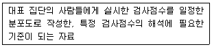
- 규준
- 표준
- 준거
- 참조
(정답률: 64%)
30. 직업상담사 자격시험 문항 중 대학수학능력을 측정하는 문항이 섞여있을 경우 가장 문제가 되는 것은?
- 타당도
- 신뢰도
- 객관도
- 매력도
(정답률: 80%)
31. 심리검사를 실시하는 목적 내지는 용도와 가장 거리가 먼 것은?
- 예측
- 진단
- 분류
- 합리화
(정답률: 77%)
32. 승진을 하려면 지방근무를 해야만 하고, 서울근무를 계속하려면 승진기회를 잃는 경우에 겪는 갈등의 유형은?
- 접근-접근 갈등
- 회피-회피 갈등
- 접근-회피 갈등
- 이중접근 갈등
(정답률: 77%)
33. 신입사원이 조직에 쉽게 적응하도록 상사가 후견인이 되어 도와주는 경력개발 프로그램은?
- 종업원 지원시스템
- 멘토십시스템
- 경력지원시스템
- 조기발탁시스템
(정답률: 82%)
34. 직무분석 자료의 분석시 고려해야 할 사항과 가장 거리가 먼 것은?
- 논리적으로 체계화되어야 한다.
- 여러 가지 목적으로 활용될 수 있어야 한다.
- 필요에 따라 가공된 정보로 구성해야 한다.
- 가장 최신의 정보를 반영하고 있어야 한다.
(정답률: 77%)
35. 수퍼(Super)의 진로발달이론에서, ‘자기에 대한 지각이 생겨나고 직업세계에 대한 기본적 이해가 이루어지는 시기’와 그 하위단계들을 순서대로 바르게 나열한 것은?
- 성장기 : 흥미기 - 환상기 – 능력기
- 성장기 : 환상기 - 흥미기 – 능력기
- 탐색기 : 흥미기 - 환상기 – 능력기
- 탐색기 : 환상기 - 흥미기 – 능력기
(정답률: 56%)
36. 개인관련 스트레스 요인 가운데 A유형 행동의 특징과 가장 거리가 먼 것은?
- 경쟁적 성취욕
- 만성적인 흥분상태
- 반대 의견에 대한 강력한 대처
- 시간에 쫓김
(정답률: 52%)
37. 긴즈버그(Ginzberg)의 진로발달이론에 관한 설명으로 틀린 것은?
- 직업선택 과정은 바람(Wishes)과 가능성(Possibility) 간의 타협이다.
- 직업선택은 일련의 결정들이 계속적으로 이루어지는 과정이다.
- 나중에 이루어지는 결정은 이전 결정의 영향을 받지 않는다.
- 직업선택은 가치관, 정서적 요인, 교육의 양과 종류, 환경 영향 등의 상호작용으로 결정된다.
(정답률: 79%)
38. 고트프레드슨(Gottfredson)의 직업포부발달단계에 관한 설명으로 틀린 것은?
- 힘과 크기 지향 – 사고과정이 구체화 되며 어른이 된다는 것의 의미를 알게 된다.
- 성역할 지향 – 자아개념이 성의 발달에 의해서 영향을 받게 된다.
- 사회적 가치 지향 – 사회계층에 대한 개념이 생기면서 타인에 대한 개념이 완성된다.
- 내적, 고유한 자아 지향 – 자아성찰과 사회계층의 맥락에서 직업적 포부가 더욱 발달하게 된다.
(정답률: 56%)
39. 로(Roe)의 욕구이론에 대한 설명과 가장 거리가 먼 것은?
- 가족과의 초기관계가 진로선택에 중요한 영향을 미친다.
- 로(Roe)는 성격이론과 직업분류 영역을 통합하는 데 관심을 두었다.
- 직업과 기본욕구 만족의 관련성이 매슬로(Maslow)의 욕구위계론을 바탕으로 할 때 가장 효율적이라고 보았다.
- 미네소타 직업평가척도에서 힌트를 얻어 직업을 7개의 영역으로 나누었다.
(정답률: 70%)
40. 일반적성검사(GATB)에서 측정하는 직업적성이 아닌 것은?
- 손가락 정교성
- 언어적성
- 사무지각
- 과학적성
(정답률: 70%)
3과목: 직업정보론
41. 충족률의 개념으로 옳은 것은?
- (취업건수/신규구직자 수) × 100
- (알선건수/신규구직자 수) × 100
- (알선건수/신규구인인원) × 100
- (취업건수/신규구인인원) × 100
(정답률: 54%)
42. 한국직업사전(2012) 부가 직업정보의 직무기능에 대한 설명에서 ( ) 안에 공통적으로 들어갈 말은?
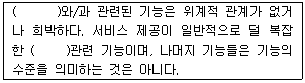
- 시스템
- 사물
- 자료
- 사람
(정답률: 54%)
43. 한국표준산업분류(2008)상 산업분류의 적용원칙으로 틀린 것은?
- 산업활동이 결합되어 있는 경우에는 생산업무에 따라서 분류하여야 한다.
- 생산단위는 산출물뿐만 아니라 투입물과 생산공정 등을 함께 고려하여 그들의 활동을 가장 정확하게 설명된 항목에 분류해야 한다.
- 수수료 또는 계약에 의하여 활동을 수행하는 단위는 자기계정과 자기책임 하에서 생산하는 단위와 동일항목에 분류되어야 한다.
- 복합적인 활동단위는 우선적으로 최상급 분류단계(대분류)를 정확히 결정하여야 한다.
(정답률: 48%)
44. 다음 검정기준에서 설명하는 국가기술자격등급은?
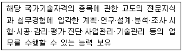
- 기술사
- 기능장
- 기사
- 산업기사
(정답률: 65%)
45. 워크넷 직업 · 진로에서 제공하는 청소년 직업흥미검사의 하위척도가 아닌 것은?
- 활동척도
- 자신감척도
- 직업척도
- 가치관척도
(정답률: 60%)
46. 한국표준산업분류(2008)의 통계단위 개념에 대한 다음 표에서 ( ) 안에 들어갈 말을 순서대로 바르게 짝지은 것은?
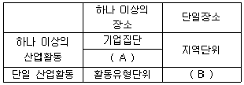
- A: 산업체 단위, B: 기업체 단위
- A: 사업체 단위, B: 기업체 단위
- A: 기업체 단위, B: 사업체 단위
- A: 기업체 단위, B: 산업체 단위
(정답률: 67%)
47. 근로자직업능력개발법상 직업능력개발훈련지원 대상이 아닌 것은?
- 취업 촉진을 위한 직업능력개발훈련이 필요한 가장으로서 해당 시 · 군 · 구청장이 고시하는 사람
- 자영업자 중 직업능력개발훈련이 필요한 사람으로서 고용노동부장관이 정하여 고시하는 사람
- 이혼, 사별 등의 사유로 배우자가 없는 여성가장
- 실업자
(정답률: 33%)
48. 한국표준직업분류(2007)에서 ‘직업 활동이 아닌 경우’에 포함되지 않는 것은?(오류 신고가 접수된 문제입니다. 반드시 정답과 해설을 확인하시기 바랍니다.)(관련 규정 개정전 문제로 여기서는 기존 정답인 2번을 누르면 정답 처리됩니다. 자세한 내용은 해설을 참고하세요.)
- 이자, 주식배당, 임대료(전세금) 등과 같은 자산 수입이 있는 경우
- 함께 거주하는 부모가 운영하는 가게에서 매일 4시간씩, 주 5일 무급으로 일하는 경우
- 경마에 의해 시세차익이 있는 경우
- 의무로 복무중인 단기부사관
(정답률: 72%)
49. 한국표준직업분류(2007)에서 다음은 무엇에 대한 설명인가?
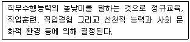
- 직능수준
- 직업수준
- 직무수준
- 과업수준
(정답률: 60%)
50. 한국표준직업분류(2007)에서 다음 개념에 해당하는 대분류는?
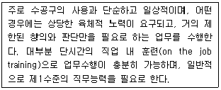
- 단순노무 종사자
- 장치 · 기계조작 및 조립 종사자
- 기능원 및 관련 기능 종사자
- 판매 종사자
(정답률: 80%)
51. 근로자직업능력개발법상 직업능력개발계좌에 대한 설명으로 틀린 것은?(관련 규정 개정전 문제로 여기서는 기존 정답인 1번을 누르면 정답 처리됩니다. 자세한 내용은 해설을 참고하세요.)
- 고용노동부장관은 직업능력개발계좌를 발급받은 근로자가 계좌적합훈련과정을 수강하는 경우에 300만원 한도에서 훈련비용을 지원할 수 있다.
- 고용노동부장관은 직업능력개발계좌의 발급을 신청한 근로자가 직업능력개발훈련이 필요하다고 판단되는 경우에는 직업능력개발훈련 비용과 직업능력개발에 관한 이력을 전산으로 종합관리하는 직업능력개발계좌를 발급할 수 있다.
- 직업능력개발계좌의 발급 절차 등에 관하여 필요한 사항은 고용노동부장관이 정하여 고시한다.
- 고용노동부장관은 계좌적합훈련과정의 운영현황, 훈련성과 등에 관한 정보를 직업능력개발정보망 또는 개별 상담 등을 통하여 제공하여야 한다.
(정답률: 67%)
52. 실기능력이 중요하여 고용노동부령이 정하는 필기시험이 면제되는 국가기술자격 기능사 종목이 아닌 것은?
- 석공기능사
- 항공사진기능사
- 한복기능사
- 조적기능사
(정답률: 68%)
53. 워크넷 ‘정부 육성 · 지원 신작업’에 대한 내용 중 법 · 제도적 인프라구축을 통해 육성하려는 직업이 아닌 것은?(관련 규정 개정전 문제로 여기서는 기존 정답인 2번을 누르면 정답 처리됩니다. 자세한 내용은 해설을 참고하세요.)
- 민간조사원
- 빅데이터전문가
- 전직지원전문가
- 산림치유지도사
(정답률: 60%)
54. 다음에서 설명하고 있는 국가기술자격은?
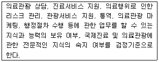
- 국제의료관광사
- 국제의료관광코디네이터
- 의료관광사
- 의료관광코디네이터
(정답률: 78%)
55. 서비스 분야 국가기술자격 종목별 응사자격 기준으로 틀린 것은?
- 컨벤션기획사 1급 – 대학졸업자 등으로서 졸업 후 응시하고자 하는 종목이 속하는 동일직무분야에서 5년 이상 실무에 종사한 자
- 소비자전문상담사 1급 – 소비자상담 관련 실무 경력 3년 이상인 사람
- 임상심리사 2급 – 임상심리와 관련하여 1년 이상 실습수련을 받은 사람 또는 2년 이상 실무에 종사한 사람으로서 대학졸업자 및 졸업예정자
- 스포츠 경영관리자 – 제한 없음
(정답률: 55%)
56. 직업정보의 수집방법 중 기존 자료에 의한 수집방법이 아닌 것은?
- 각종 통계조사, 업무통계
- 신문 등 보도기사
- 구직표 · 구인표
- 직업안정기관 이용자로부터의 수집
(정답률: 63%)
57. 한국표준직업분류(2007)의 포괄적인 업무에 대한 직업분류 원칙이 아닌 것은?
- 주된 직무 우선 원칙
- 최상급 직능수준 우선 원칙
- 수입 우선의 원칙
- 생산업무의 우선 원칙
(정답률: 70%)
58. 한국표준직업분류(2007)상의 일의 계속성에 대한 설명으로 틀린 것은?
- 매일, 매주, 매월 등 주기적으로 행하는 것
- 계절적으로 행해지는 것
- 명확한 주기는 없으나 계속적으로 행해지는 것
- 취업한 후 계속적으로 행할 의지와 가능성이 있는 것
(정답률: 59%)
59. 한국직업사전(2012)에 수록된 직업정보는 크게 5가지 항목으로 구분 할 수 있다. 이에 대한 설명으로 틀린 것은?
- 본직업명 – 산업현장에서 일반적으로 해당 직업으로 알려진 명칭 혹은 그 직무가 통상적으로 호칭되는 것으로 ‘한국직업사전’에 그 직무내용이 기술된 명칭이다.
- 직업코드 – 특정 직업을 구분해 주는 단위로서 ‘한국고용직업분류’의 세분류 5자리 숫자로 표기하였다.
- 수행직무 – 직무담당자가 직무의 목적을 완수하기 위하여 수행하는 구체적인 작업내용을 작업순서에 따라 서술한 것이다.
- 부가 직업정보 – 정규교육, 숙련기간, 직무기능, 작업강도, 육체활동 등을 포함한다.
(정답률: 64%)
60. 직업상담사의 업무와 가장 거리가 먼 것은?
- 구인 · 구직접수, 취업알선, 채용여부 확인 등의 직업소개업무
- 구직자에게 적성, 흥미검사 등을 실시하여 직업정보 제공
- 제반 노동관계법 등을 검토하여 준수여부를 확인
- 채용박람회와 같은 채용행사의 기획 · 실행
(정답률: 62%)
4과목: 노동시장론
61. 우리나라 임금체계에 대한 설명과 가장 거리가 먼 것은?
- 소정근로시간과 관련된 정액급여는 기본급과 제수당으로 나누어진다.
- 통상임금의 산정에서 초과금액, 특별금여, 업적수당, 생활보조수당을 포함한다.
- 평균임금은 퇴직금, 휴업수당, 산재보상 등의 산출기준임금이며, 고용기간 중에서 근로자가 지급받고 있던 평균적인 임금수준을 말한다.
- 노동법에서 기준임금이 통상임금과 평균임금으로 이원화되어 있어 기업에서의 임금관리가 어려운 측면이 있다.
(정답률: 41%)
62. 기혼여성의 경제활동참가율은 60%이고 실업률은 20%일 때, 기혼여성의 고용률은?
- 12%
- 48%
- 56%
- 86%
(정답률: 65%)
63. 통계상 실업자에 포함되지 않는 사람은?
- 대학 재학생으로 시간제 근무를 찾는 사람
- 재학 중인 16세의 소녀 가장으로 시간제 일자리를 찾고 있는 사람
- 부모가 운영하는 가게에서 매일 4시간 이상 무급으로 일하면서 다른 직장을 찾고 있는 고교 졸업자
- 현재 사회봉사 활동을 하면서 수입이 있는 일자리를 찾고 있는 성인
(정답률: 59%)
64. 선별가설(Screening Hypothesis)에 대한 설명과 가장 거리가 먼 것은?
- 교육훈련이 생산성을 직접 높이는 것은 아니고 유망한 근로자를 식별해 주는 역할을 한다.
- 빈곤 문제 해결을 위해서는 교육훈련 기회를 확대하는 것이 중요하다.
- 학력이 높은 사람이 소득이 높은 것은 교육 때문이 아니고 원래 능력이 우수하기 때문이다.
- 근로자들은 자신의 능력과 재능을 보여주기 위해 교육에 투자한다.
(정답률: 39%)
65. 임금이 10% 상승할 때 노동수요량이 20% 하락했다면 노동수요의 탄력성 값은?
- -0.5
- 0.5
- -2.0
- 2.0
(정답률: 52%)
66. 연봉제의 장점과 가장 거리가 먼 것은?
- 전문성의 촉진
- 개인의 능력에 기초한 생산성 향상
- 구성원 상호 간의 친밀감 증진
- 임금 관리 용이
(정답률: 66%)
67. 던롭(Dunlop)의 내부노동시장론에서 일반적으로 외부노동시장과 분리되는 독립적인 노동시장이 존재한다고 여기는 조직체는?
- 기업
- 산업
- 지역사회
- 국가
(정답률: 56%)
68. 근로자의 경영참가 형태 가운데 가장 적극적인 형태는?
- 단체교섭에 의한 참가
- 단체행동에 의한 참가
- 노사협의회에 의한 참가
- 근로자중역, 감사역제에 의한 참가
(정답률: 62%)
69. 스캔론 플랜(Scanlon Plan)에 대한 설명과 가장 거리가 먼 것은?
- 근로자 경영참가 중에서 이익참가의 대표적 유형이다.
- 노사협력에 의한 생산성 향상을 목적으로 한다.
- 매출액을 성과배분의 기준으로 삼는다.
- 종업원 개개인의 능력을 자극하는 제도이다.
(정답률: 47%)
70. 파업이론에 대한 설명이 옳은 것으로 짝지어진 것은?
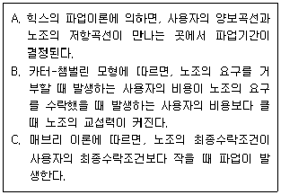
- A, B
- B, C
- A, C
- A, B, C
(정답률: 61%)
71. 실업에 대한 설명으로 가장 적합한 것은?
- 사이버 뱅킹, 폰 뱅킹과 같은 은행 업무의 변화로 인하여 은행원의 공급과잉이 발생하는 반면, 정보통신(IT)산업의 경우 노동공급 부족이 발생하고 있는 현상은 경기적 실업과 밀접한 관련이 있다.
- 자발적 실업은 노동시장의 정보 부족과 같은 노동시장의 불완전성에 의해 발생하는 것으로서 임금의 경직성과도 매우 밀접한 관련이 있다.
- 사람들이 더 좋은 직장을 찾기 위하여 잠시 쉬고 있다거나 학교를 졸업하고 직장을 찾는 과정에서 발생하는 실업을 마찰적 실업이라고 하며, 이는 완전고용상태에서도 존재한다.
- 일반적인 정부 고용정책의 주된 대상이 되는 비자발적 실업으로는 경기적 실업, 계절적 실업, 구조적 실업, 마찰적 실업 등이 있다.
(정답률: 51%)
72. 노동조합의 임금교섭력을 증가시켜 주는 경우는?
- 노동비용이 생산비에서 차지하는 비중이 클 경우
- 무역개방화가 심화되어 상품가격이 하락하는 경우
- 세계적 시장경쟁 심화로 상품수요가 더 탄력적일 경우
- 상품의 수요가 감소하였으나 새로운 생산설비가 도입되지 못할 경우
(정답률: 39%)
73. 해고에 대한 사전 예고와 통보가 실업을 감소시킬 수 있는 실업의 유형을 모두 짝지은 것은?
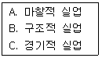
- A, B
- A, C
- B, C
- A, B, C
(정답률: 62%)
74. 노동의 이동(Labor Turnover)은 노동자의 이동을 무엇을 중심으로 파악하는 것인가?
- 산업
- 직종
- 지역
- 기업
(정답률: 36%)
75. 기업의 장기 노동수요곡선에 대한 설명으로 옳은 것은?
- 단기 노동수요곡선과 같다
- 단기 노동수요곡선보다 비탄력적이다.
- 단기 노동수요곡선보다 탄력적이다.
- 일정한 규칙이 없다.
(정답률: 59%)
76. 유보임금(Reservation Wage)에 관한 설명이 옳은 것으로 짝지어진 것은?
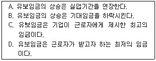
- A, C
- B, C
- B, D
- A, D
(정답률: 64%)
77. 노동조합에 대한 설명으로 틀린 것은?
- 노동조합은 노동수요를 비탄력적으로 하는 전략을 사용하여 교섭력을 증대시키고자 한다.
- 노동조합의 임금인상에 의하여 축출된 노동자들이 조직되지 않은 다른 곳에 취업하려 하여 비조직분야의 임금을 하락시키는 것을 노동조합의 파급효과(Spillover Effect)라 한다.
- 비조직부문의 기업주들이 노동조합이 결성될 것을 두려워하여 미리 임금을 올려주는 것을 노동조합의 위협효과(Threat Effect)라 한다.
- 기업은 반드시 해당 노동조합원만을 신규인력으로 채용할 수 있으며, 고용된 노동자가 노동조합을 탈퇴하면 종업원의 지위도 상실되는 제도를 유니온 숍(Union Shop)이라 한다.
(정답률: 69%)
78. 노동수요 탄력성의 크기에 영향을 미치는 요인과 가장 거리가 먼 것은?
- 생산물 수요의 가격탄력성 크기
- 총비용에서 노동이 차지하는 비중
- 자본으로의 대체 용이성
- 대체생산요소의 수요탄력성
(정답률: 55%)
79. 성공적인 제안제도를 실시하기 위한 요건과 가장 거리가 먼 것은?
- 제안은 반드시 관리자 또는 감독자와의 협의를 거치도록 한다.
- 심사를 거쳐 채택된 제안에 대해서는 충분한 보상을 한다.
- 제안을 장려 · 지도하는 방식을 제도화한다.
- 제안을 신속하고 공평하게 처리 · 심사한다.
(정답률: 63%)
80. 변호사와 건설근로자 간에 임금격차가 발생하는 이유에 대한 설명으로 가장 적합한 것은?
- 건설근로자가 산재위험과 근로조건에 대해 보상임금을 받지 못하기 때문이다.
- 변호사와 건설근로자의 일에 대한 선호가 다르기 때문에 임금차이를 비교할 수 없다.
- 변호사와 건설근로자의 교육수준이 다르기 때문에 임금차이를 비교할 수 없다.
- 대다수의 근로자가 변호사 직업을 선호하지 않기 때문이다.
(정답률: 47%)
5과목: 노동관계법규
81. 고용보험법상 구직급여의 수급 수준에 직접적인 영향을 미치지 않는 요소는?
- 가입자(신청인)의 가입기간
- 가입자(신청인)의 연령
- 가입자(신청인)의 평균임금
- 가입자(신청인)의 가족 수
(정답률: 69%)
82. 고용상 연령차별금지 및 고령자고용촉진에 관한 법상 제조업, 운수업, 부동산 및 임대업을 제외한 산업의 고령자 기준고용률은?
- 그 사업장의 상시근로자의 100분의 1
- 그 사업장의 상시근로자의 100분의 2
- 그 사업장의 상시근로자의 100분의 3
- 그 사업장의 상시근로자의 100분의 6
(정답률: 64%)
83. 근로기준법의 적용관계에 관한 설명으로 틀린 것은?
- 근로기준법상의 근로자라 함은 직업의 종류를 불문하고 임금 · 급료 기타 이에 준하는 수입에 의하여 생활하는 자를 말한다.
- 가사(家事) 사용인에게는 근로기준법이 적용되지 않는다.
- 동거하는 친족만을 사용하는 사업 또는 사업장에는 근로기준법이 적용되지 않는다.
- 근로기준법상의 사용자란 사업주 또는 사업경영담당자, 그 밖에 근로자에 관한 사항에 대하여 사업주를 위하여 행위하는 자를 말한다.
(정답률: 52%)
84. 남녀고용평등과 일 · 가정 양립지원에 관한 법상에서 ( )안에 들어갈 내용은?(관련 규정 개정전 문제로 여기서는 기존 정답인 3번을 누르면 정답 처리됩니다. 자세한 내용은 해설을 참고하세요.)
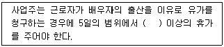
- 1일
- 2일
- 3일
- 4일
(정답률: 76%)
85. 근로자직업능력개발법상 직업능력개발훈련이 중요시되어야 할 대상으로 틀린 것은?
- 고령자
- 장애인
- 사업주
- 국민기초생활보장법에 따른 수급권자
(정답률: 70%)
86. 근로자직업능력개발법상 직업능력개발훈련의 기본원칙에 대한 설명으로 틀린 것은?
- 직업능력개발훈련은 정부 주도로 노사의 참여와 협력을 바탕으로 실시되어야 한다.
- 직업능력개발훈련은 근로자 개인의 희망 · 적성 · 능력에 맞게 근로자의 생애에 걸쳐 체계적으로 실시되어야 한다.
- 직업능력개발훈련은 근로자의 성별, 연령, 신체적 조건, 고용형태, 신앙 또는 사회적 신분 등에 따라 차별하여 실시되어서는 아니 된다.
- 직업능력개발훈련은 교육 관계 법에 따른 학교 교육 및 산업현장과 긴밀하게 연계될 수 있도록 하여야 한다.
(정답률: 68%)
87. 남녀고용평등과 일 · 가정 양립 지원에 관한 법률상 차별에 관한 설명으로 틀린 것은?
- 사업주가 근로자에게 성별, 혼인, 가족 안에서의 지위, 임신 또는 출산 등의 사유로 합리적인 이유 없이 채용 또는 근로의 조건을 다르게 하거나 그 밖의 불리한 조치를 하는 경우를 차별이라고 한다.
- 사업주가 채용조건이나 근로조건은 동일하게 또는 여성이 다른 한 성에 비하여 현저히 적고 그에 따라 특정 성에게 불리한 결과를 초래하며 그 조건이 정당한 것임을 증명할 수 없는 경우는 차별에 포함된다.
- 직무의 성격에 비추어 특정 성이 불가피하게 요구되는 경우라도 특정 성에게 불리한 결과를 초래할 경우 차별에 해당한다.
- 여성 근로자의 임신 · 출산 · 수유 등 모성보호를 위한 조치를 하는 경우는 차별에 해당되지 않는다.
(정답률: 70%)
88. 고용정책기본법상 기본원칙으로 틀린 것은?
- 근로자의 직업선택의 자유가 확보되도록 한다.
- 고용정책은 효율적이고 성과지향적으로 수립 · 시행하여야 한다.
- 구직자의 자발적인 취업노력을 촉진하여야 한다.
- 사업주의 타율적인 고용관리를 존중하여야 한다.
(정답률: 63%)
89. 고용상 연령차별금지 및 고령자고용촉진에 관한 법률상 정녀에 관한 설명으로 옳은 것은?
- 사업주가 근로자의 정년을 정하는 경우에는 그 정년이 50세 이상이 되도록 노력하여야 한다.
- 고용노동부장관은 상시 100명 이상의 근로자를 사용하는 사업주로서 정년을 현저히 낮게 정한 사업주에게 정년의 연장을 권고할 수 있다.
- 사업주는 고령자인 정년퇴직자를 재고용할 때 당사자 간의 합의에 의하여 임금의 결정을 종전과 달리할 수 없다.
- 고용노동부장관은 정년 연장에 따른 사업체의 인사와 임금 등에 대하여 상담, 자문, 그 밖에 필요한 협조와 지원을 하여야 한다.
(정답률: 52%)
90. 근로자직업능력개발법상 훈련계약과 권리 · 의무에 관한 내용으로 틀린 것은?
- 사업주와 직업능력개발훈련을 받으려는 근로자는 직업능력개발훈련에 따른 권리 · 의무 등에 관하여 훈련계약을 체결할 수 있다.
- 사업주는 훈련계약을 체결할 때에는 해당 직업능력개발훈련을 받는 사람이 직업능력개발훈련을 이수한 후에 사업주가 지정하는 업무에 일정기간 종사하도록 할 수 있다.
- 훈련계약을 체결하지 아니한 경우에 고용근로자가 받은 직업능력개발훈련에 대하여는 그 근로자가 근로를 제공하지 아니한 것으로 본다.
- 기준근로시간 외의 훈련시간에 대하여는 생산시설을 이용하거나 근무장소에서 하는 직업능력개발훈련의 경우를 제외하고는 연장근로와 야간근로에 해당하는 임금을 지급하지 아니할 수 있다.
(정답률: 63%)
91. 남녀고용평등과 일 · 가정 양립 지원에 관한 법상 규정된 내용이 아닌 것은?
- 동일 가치 노동에 대한 동일 임금 지급의 보장
- 여성의 무급 생리휴가
- 직장 내 성희롱금지 및 예방교육
- 여성의 직업능력 개발 및 고용 촉진
(정답률: 65%)
92. 고용보험법상 내용으로 틀린 것은?
- 이직이란 피보험자란 사업주 사이의 고용관계가 끝나게 되는 것을 말한다.
- 일용근로자란 2개월 미만 동안 고용되는 자를 말한다.
- 실업이란 근로의 의사와 능력이 있음에도 불구하고 취업하지 못한 상태에 있는 것을 말한다.
- 고용보험은 고용노동부장관이 관장한다.
(정답률: 72%)
93. 직업안정법상 “직업소개”의 뜻으로 옳은 것은?
- 취업하려는 사람이 그 능력과 소질에 알맞은 직업을 쉽게 선택할 수 있도록 하기 위한 직업적성검사, 직업정보의 제공, 직업상담, 실습, 권유 또는 조언, 그 밖에 직업에 관한 지도를 말한다.
- 구인자와 구직자 간의 직업을 알선하는 것을 말한다.
- 구인자와 구직자 간의 직업을 소개하고 수수료를 받는 것을 말한다.
- 구인 또는 구직의 신청을 받아 구직자 또는 구인자를 탐색하거나 구직자를 모집하여 구인자와 구직자 간에 고용계약이 성립되도록 알선하는 것을 말한다.
(정답률: 55%)
94. 근로기준법상 평균임금의 산정대상기간에서 제외되는 기간에 해당되지 않는 것은?
- 2개월 이내의 수습기간
- 업무상 부상 · 질병으로 요양하기 위하여 휴업한 기간
- 사용자의 귀책사유로 휴업한 기간
- 병영의무의 이행을 위하여 임금을 받으면서 휴직한 기간
(정답률: 54%)
95. 헌법에 명시된 노동기본권으로만 짝지어진 것은?
- 근로권, 단결권, 단체교섭권, 단체행동권
- 근로권, 노사공동결정권, 단체교섭권, 단체 행동권
- 근로권, 단결권, 경영참가권, 단체행동권
- 근로의 의무, 단결권, 단체 교섭권, 이익균점권
(정답률: 79%)
96. 고용정책기본법상 고용정책심의회에 관한 내용으로 틀린 것은?
- 고용에 관한 주요 사항을 심의하기 위하여 국무총리실에 고용정책심의회를 둔다.
- 인력의 공급구조와 산업구조의 변화 등에 따라 고용 및 실업대책에 관한 사항 등을 심의한다.
- 위원장 1명을 포함한 30명 이내의 위원으로 구성한다.
- 고용정책심의회를 효율적으로 운영하고 고용정책심의회의 심의사항을 전문적으로 심의하도록 하기 위하여 고용정책심의회에 분야별로 전문위원회를 둘 수 있다.
(정답률: 65%)
97. 근로기준법상 취업규칙의 작성과 변경에 관한 설명으로 옳은 것은?
- 취업규칙의 작성 · 변경에는 반드시 노동조합의 동의를 필요로 한다.
- 취업규칙의 변경으로 근로자가 불리하게 되는 경우에는 노동조합(근로자 과반수로 조직된 노동조합이 있는 경우) 또는 근로자 과반수의 동의를 필요로 한다.
- 취업규칙은 사용자와 근로자로 합의로 작성한다.
- 취업규칙에서 근로자에 대하여 감급의 제재를 정할 경우에 그 감액은 1회의 금액이 통상임금의 1일분의 2분의 1을 초과하지 못한다.
(정답률: 52%)
98. 고용상 연령차별금지 및 고령자고용촉진에 관한 법상 중견전문인력 고용지원센터에 대한 설명으로 틀린 것은?
- 중견전문인력 고용지원센터는 직업안정법에 따라 무료직업소개사업을 하는 비영리법인 또는 공익단체로서 필요한 전문인력과 시설을 갖춘 단체 중에서 지정한다.
- 고용노동부장관은 중견전문인력 고용지원센터에 대하여 직업안정 업무를 하는 행정기관이 수집한 구인 · 구직 정보, 지역 내의 노동력 수급 상황, 그 밖에 필요한 자료를 제공할 수 있다.
- 고용노동부장관은 중견전문인력 고용지원센터의 소요 경비에 대해서는 지원하지 않는다.
- 중견전문인력 고용지원센터는 중견전문인력의 중소기업에 대한 경영자문 및 자원봉사활동 등의 지원사업을 한다.
(정답률: 69%)
99. 직업안정법상 일용근로자 이외의 직업소개를 하는 유료직업소개사업자의 장부 및 서류 비치 기간으로 옳은 것은?
- 종사자명부 :3년
- 구인신청서 및 구직신청서 : 2년
- 근로계약서 : 1년
- 금전출납부 및 금전출납 명세서 : 1년
(정답률: 57%)
100. 헌법상 근로3권과 그 제한에 대한 설명으로 틀린 것은?
- 근로조건의 향상과 무관한 근로3권의 행사는 제한될 수 있다.
- 공무원인 근로자는 법률이 정하는 자에 한하여 단결권 · 단체교섭권 및 단체행동권을 가진다.
- 법률이 정하는 주요방위산업체에 종사하는 근로자의 단체교섭권 · 단체행동권은 법률이 정하는 바에 의하여 제한될 수 있다.
- 근로3권은 국가안정보장 · 질서유지 또는 공공복리를 위하여 필요한 경우에 한하여 법률로써 제한될 수 있다.
(정답률: 52%)